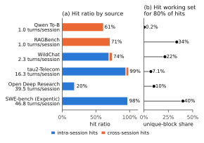
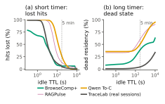
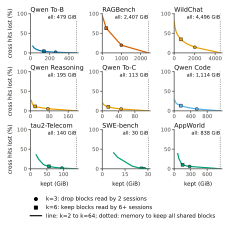

LLM systems · KV-cache storage · Workload characterization
The Storage View of KV Cache:
Characterizing Cache Behavior Across LLM Workloads
1The University of Texas at Austin · 2IBM Research · †Work done during an internship at IBM Research
Abstract
Modern LLM serving extends KV caches beyond GPU memory into host DRAM, SSDs, and remote storage, yet these stores are still largely managed by workload-agnostic policies such as LRU and fixed TTLs. We characterize block-level KV-cache reuse, lifetime, and footprint across 11 production and public traces spanning chat, API serving, RAG, coding agents, tool-using agents, and multi-lineage workflows. Across these workloads, KV state repeatedly separates into single-session state—useful to one live execution—and multi-session state that recurs across executions. The results show that three generic signals can expose much of the context storage needs: a workload identifier, a session identifier, and session completion.
Key findings
The same hit rate can hide very different storage behavior.
We organize the analysis around reuse scope, lifetime, and footprint—the three dimensions that shape retention, reclamation, and tier placement.
01 · Reuse scope
Separate private history from shared recurring content.
As sessions deepen, reuse increasingly comes from repeatedly reading their own accumulated history. Shallow workloads instead benefit from templates, documents, and prefixes shared across sessions.
Storage implication: manage these as distinct populations. Keep private history with its live session; rank shared blocks by recurrence across sessions.
How to read this
Blue is reuse within one session; orange is reuse shared across sessions. Session depth changes the balance.

02 · Lifetime
Idle time is not the end of a session.
Human think time and tool execution can leave KV state idle but still useful. Short timers discard future hits; long timers keep completed-session state long after it becomes dead.
Storage implication: reclaim single-session state at session completion. Treat pauses as placement opportunities, not proof that state has expired.
How to read this
Moving right preserves more future hits, but it also leaves more completed-session state resident. No single TTL avoids both costs.

03 · Footprint
The shared pool has a hot head and a large cold tail.
Widely recurring prefixes can deliver substantial reuse from a compact footprint, while most shared memory belongs to blocks read by only a few sessions. The balance varies sharply by workload.
Storage implication: keep frequently recurring blocks in faster tiers and demote the low-frequency tail according to each workload’s observed recurrence.
Compact hot head
Frequently recurring prefixes deliver substantial reuse from a comparatively small footprint.
Large, infrequent tail
Across eight of nine traces, this share of multi-session memory belongs to blocks read by at most five sessions.
View the complete nine-workload plot
How to read this
Lower-left is the useful operating region: little shared memory retained with few cross-session hits lost.

Design takeaway
A small interface, not application-specific semantics.
Storage already observes block identities, sizes, and accesses. Three additional signals expose the missing structure.
Workload ID
Groups sessions whose recurrence behavior should be learned together.
Session ID
Distinguishes reuse within one execution from reuse across executions.
Session lifecycle
Marks the clean reclamation boundary for private, single-session state.
Read the full paper